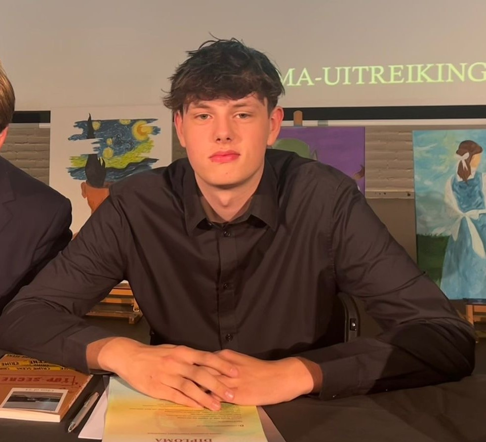
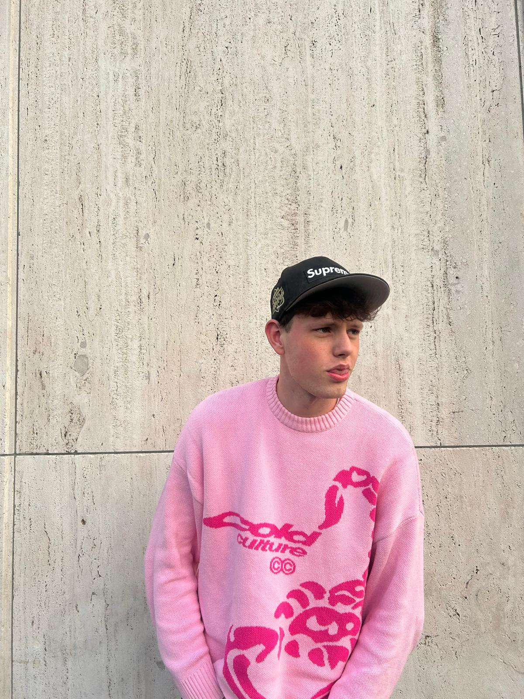

Portfolio · CMD · 2025
Communication & Multimedia Design student met een achtergrond in bouwkunde en de bouw. Creatief, doelgericht en altijd op zoek naar de volgende uitdaging.


Over mij
Na het behalen van mijn havo-diploma in 2024 ben ik gestart met de opleiding Bouwkunde. Halverwege besloot ik echter om een andere richting op te gaan en ben ik aan de slag gegaan in de bouw, waar ik als loodgieter praktische ervaring heb opgedaan.
In die periode heb ik veel geleerd over samenwerken, aanpakken en het realiseren van technische projecten. Inmiddels ben ik begonnen met de opleiding Communication and Multimedia Design (CMD), omdat ik mijn creativiteit en interesse in techniek graag combineer met digitale vormgeving en gebruikservaring.
CMD Student · RotterdamWat drijft mij
CMD Kwaliteiten